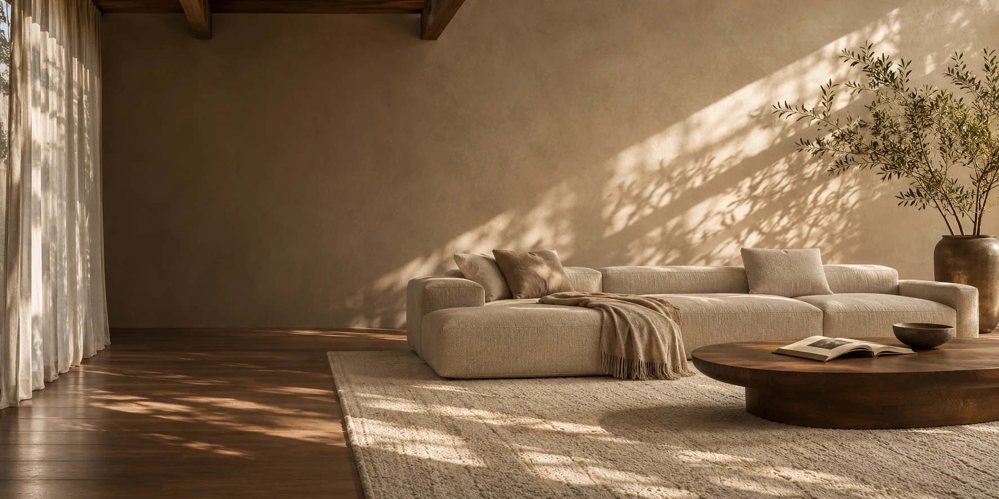
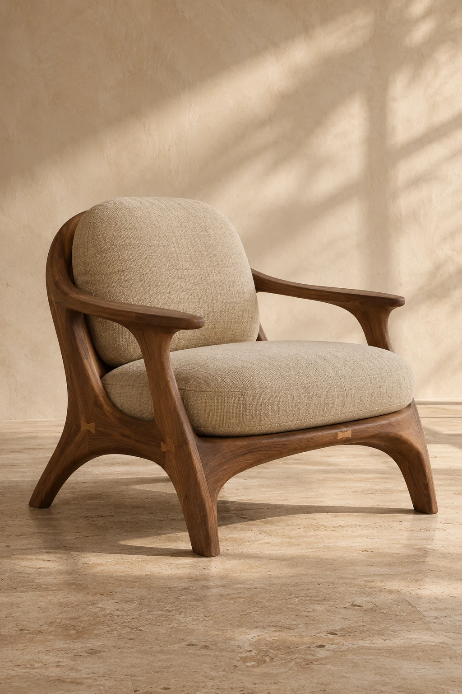

为日常而设计
从坐下、倚靠、随手放下一杯茶开始，让形态回应真实的生活。

为每一种日常，留一处恰好的空间。
自然 · 从容 · 恒久01 / THE COLLECTION
不急于填满空间。
让每一件留下的家具，都有被喜爱的理由。
把心动的作品，留在这里。
点击作品右上角的爱心，即可加入收藏。
01 / THE WARMTH OF WOODFORMA — MATERIAL STUDY02 / MATERIAL MATTERS
目光之外，还有触感。
我们想把自然的温度，留在每天相处的细节里。
深浅交错的木纹，让利落的线条也拥有柔软的表情。从扶手的一道弧度，到桌面的一圈年轮，细节值得慢慢欣赏。
03 / OUR POINT OF VIEW
少一点堆叠，多一点与生活的亲近。
家不必成为展厅。它可以容得下一本没读完的书、
一段放空的午后，以及每一个真实的你。
从坐下、倚靠、随手放下一杯茶开始，让形态回应真实的生活。
木纹的深浅，织物的肌理。那些细小的不同，构成家的独特气息。
不填满每一个角落。让光线穿过，让自在发生，让空间慢慢长成家。
YOUR SPACE, YOUR PACE
一把椅子，一个角落，或一整个家。
整理你的空间灵感，留下一份属于自己的计划。